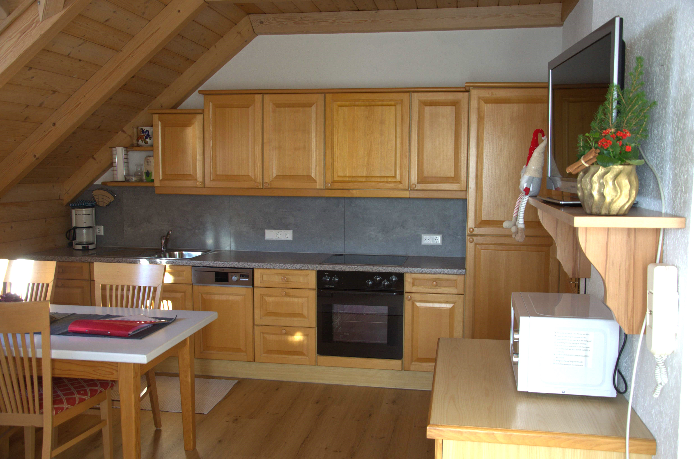
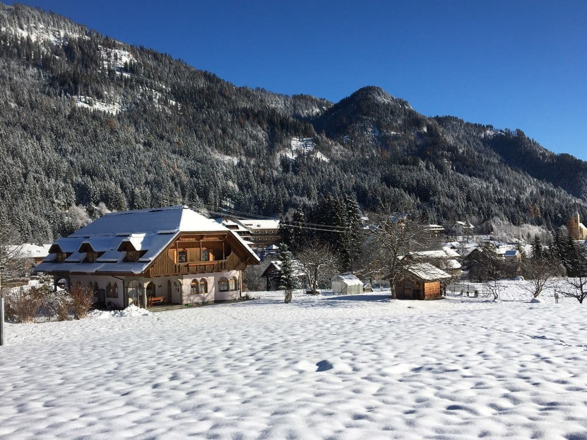
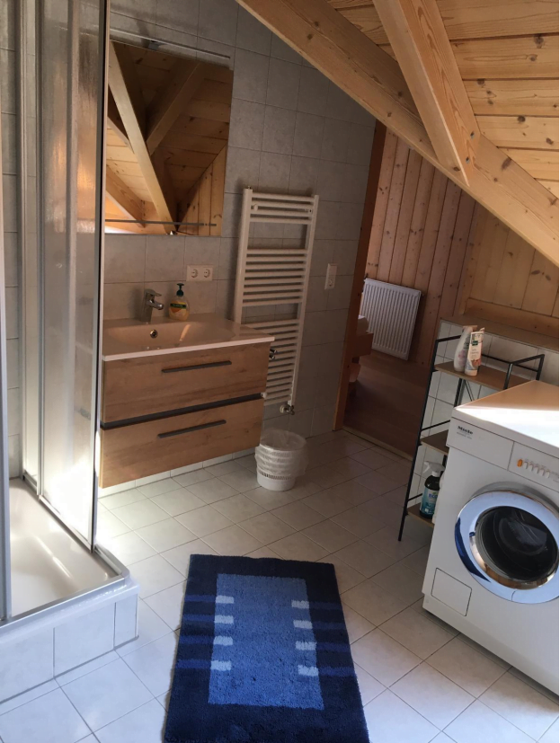
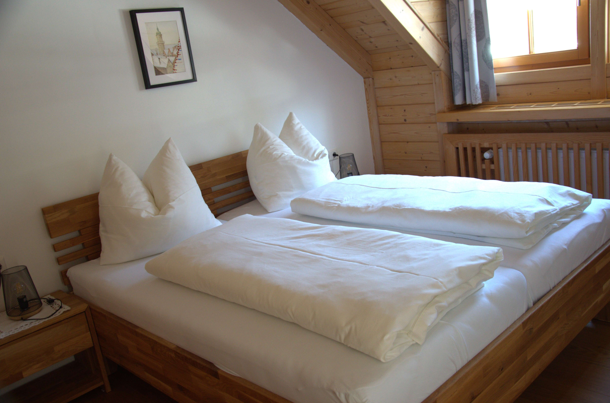

Küche
Die Küchenzeile umfasst: Spülmaschine, Kühlschrank mit Gefrierfach, Ceranfeld mit Backofen, Kaffeemaschine, Wasserkocher, Mikrowelle und einen Toaster
Herzlich Willkommen in der Ferienwohnung Hubmann in Weißbriach im Gitschtal bei Weissensee in Kärnten. Unsere familiengeführte Ferienwohnung bietet Ihnen in ruhiger und sonniger Lage auf 75 m² Platz für 2-5 Personen. Wenn Sie Ruhe und Erholung zwischen Weißbriach, Weissensee und Nassfeld wünschen, sind Sie bei uns genau richtig!
© https://media.nlw.at/

Unsere vollausgestattete Ferienwohnung bietet Ihnen auf 75 m² Platz für 2 bis 5 Personen.
Von den beiden geräumigen Schlafzimmern mit je einem Doppelbett, ist eines mit Balkon ausgestattet. Zusätzlich umfasst die Ferienwohnung ein kleines Einbettzimmer mit Balkon.
Vom großen Garten, der das Haus umgibt, haben Sie eine herrliche Aussicht in Richtung Tal und Skipiste. Parkplätze sind am Haus verfügbar.
Im Winter befindet sich das Skigebiet Weißbriach in ca. 3 Fahrminuten bzw. 10 Minuten zu Fuß entfernt. Ein Loipeneinstieg ist 100 m von der Ferienwohnung entfernt, und das Nassfeld ist ebenfalls gut erreichbar. Unser Schuhtrockenraum bzw. Skiraum stehen zusätzlich für Sie zur Verfügung.
Im Sommer können Sie unseren privaten Seezugang am 11 km entfernten Weissensee nutzen oder einen der wunderschönen Badeseen in der Umgebung besuchen. Das Gitschtal und die Region Weissensee bieten Ihnen Wandertouren aller Schwierigkeitsgrade, vom gemütlichen Spaziergang bis zum alpinen Gipfelaufstieg ist für jeden etwas dabei.

Die Küchenzeile umfasst: Spülmaschine, Kühlschrank mit Gefrierfach, Ceranfeld mit Backofen, Kaffeemaschine, Wasserkocher, Mikrowelle und einen Toaster

Im Badezimmer befinden sich ein Waschtisch, Dusche, Badewanne, WC, Waschmaschine und ein Föhn

Sat-TV, kostenfreies WLAN, Bettwäsche, Hand- und Duschtücher, Geschirrtücher Service für Frühstücksgebäck
FAQ
Der Weissensee liegt etwa 11 km von der Ferienwohnung entfernt und ist mit dem Auto schnell erreichbar.
Ja, direkt am Haus stehen Parkplätze zur Verfügung. Die Lage ist ruhig und sonnig in Weißbriach im Gitschtal.
Die Ferienwohnung bietet auf 75 m² Platz für 2 bis 5 Personen und ist damit ideal für Paare, Familien und kleine Gruppen.
Ja, Hunde sind auf Anfrage willkommen. Es fällt eine Gebühr von 6 € pro Tag an.
Ja, kostenfreies WLAN gehört zur Ausstattung der Ferienwohnung.
Die 75 m² große Ferienwohnung besteht aus Wohnküche, zwei Schlafzimmern, einem kleinen Einbettzimmer, Bad und Vorraum.
Die Küche ist mit Spülmaschine, Kühlschrank mit Gefrierfach, Ceranfeld mit Backofen, Kaffeemaschine, Wasserkocher, Mikrowelle und Toaster ausgestattet.
Im Winter sind das Skigebiet Weißbriach, der Loipeneinstieg und der Skiraum besonders praktisch. Im Sommer profitieren Sie vom privaten Seezugang am Weissensee und vom großen Garten mit Grillmöglichkeit.
Andrea und Adi Hubmann
9622 Weißbriach 150
FRAGEN SIE JETZT UNVERBINDLICH AN